1 Alaya Lab2 The University of Tokyo3 Institute of Science Tokyo4 University of California, Merced
* Equal contribution† Corresponding authors
Who edits 3D better? EditHero puts conventional methods and LLMs that write code on the same long edit chains, with the right answer after every edit.
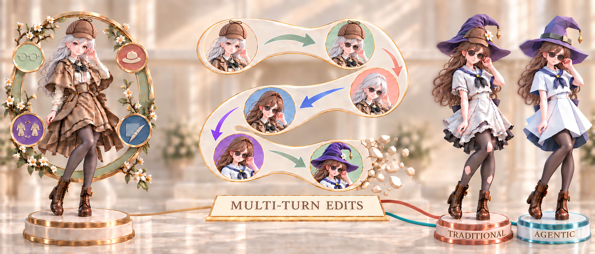
t0t1t2t3t4t5AddRemoveReplaceRetextureEdit chains with an exact target after every turn, and what happens when editors keep editing their own output.
Library parts in, a JSON log out. The log rebuilds every state exactly. Every turn checked by a person.
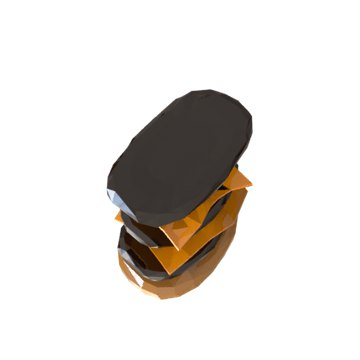
→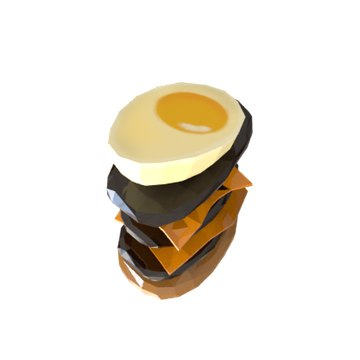
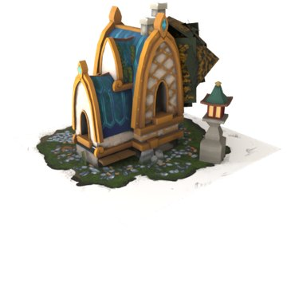
→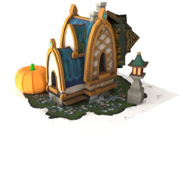
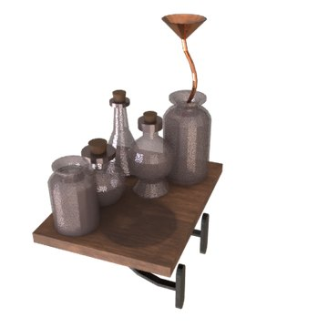
→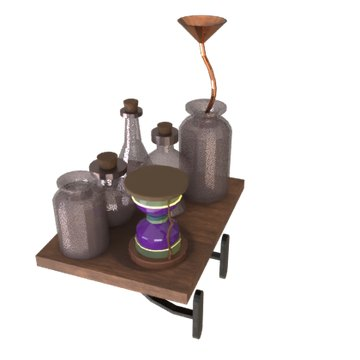
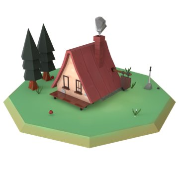
→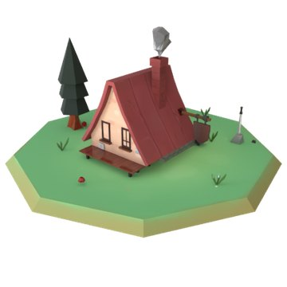
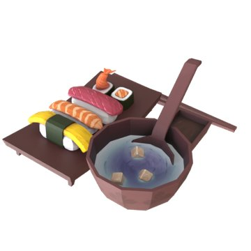
→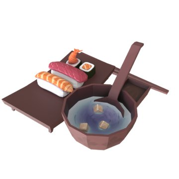
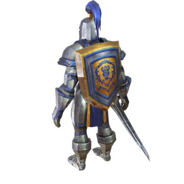
→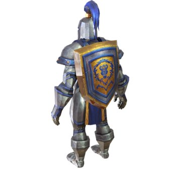
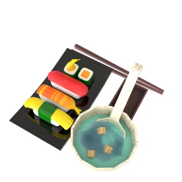
→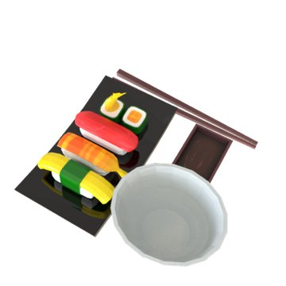
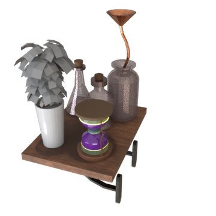
→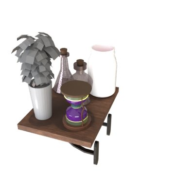
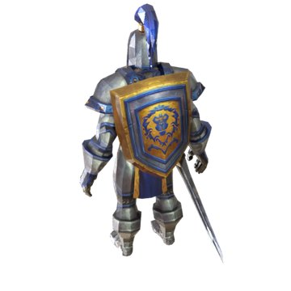
→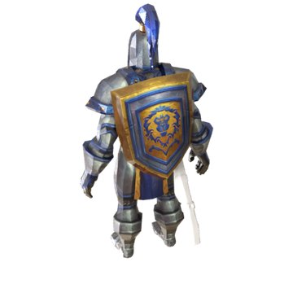
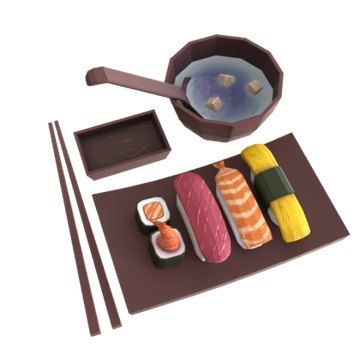
→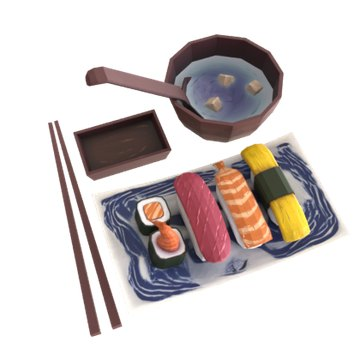
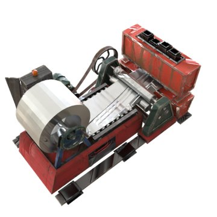
→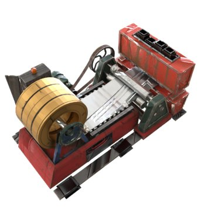
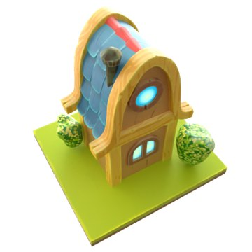
→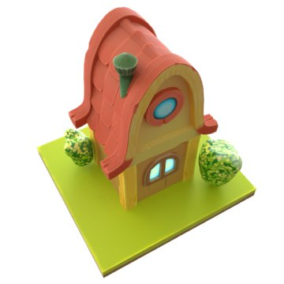
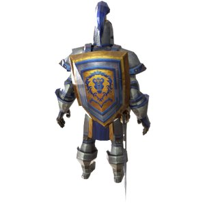
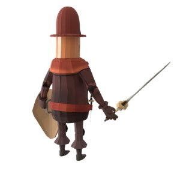
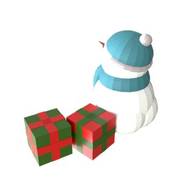
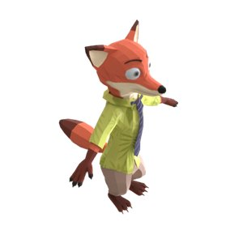
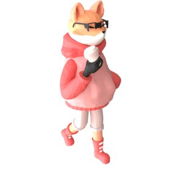
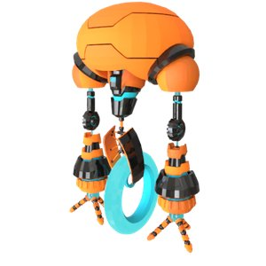
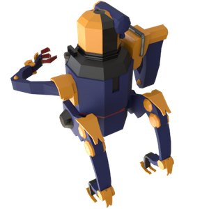
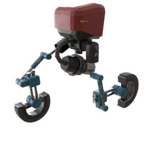
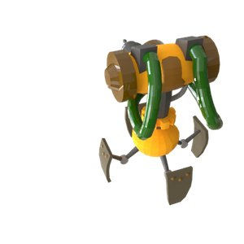
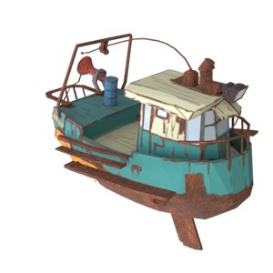
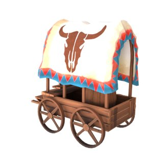
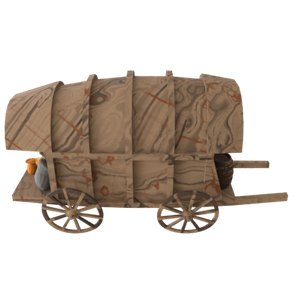
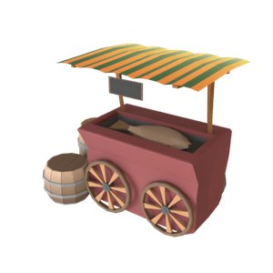
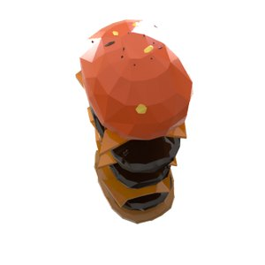
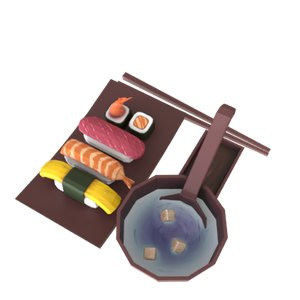
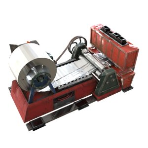
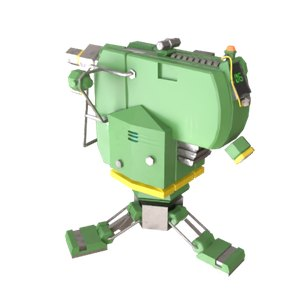
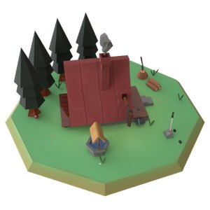
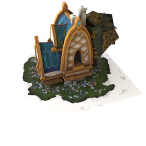
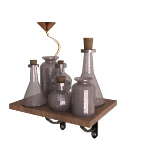
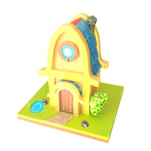
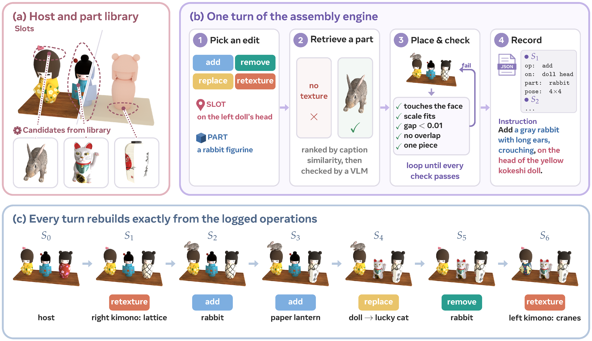
Each method keeps editing its own output.
operationobjectattribute
Same camera and light for every tile.
IF, share of the asked change made
CC0, untouched part of the first object kept
55 chains, 416 edits. Every method keeps editing its own output.
@misc{yu2026editherobenchmarklonghorizonpartlevel,
title={EditHero: A Benchmark for Long-Horizon Part-Level 3D Editing and Vibe Modeling},
author={Ruihan Yu and Yu-Ju Tsai and Muyao Niu and Runyi Li and Lian Fu and Hanqing Liu and Zheng-Hui Huang and Yonghao Yu and Sho Kuno and Ming-Hsuan Yang and Kaipeng Zhang and Zhixiang Wang},
year={2026},
eprint={2610.02298},
archivePrefix={arXiv},
primaryClass={cs.CV},
url={https://arxiv.org/abs/2610.02298},
}